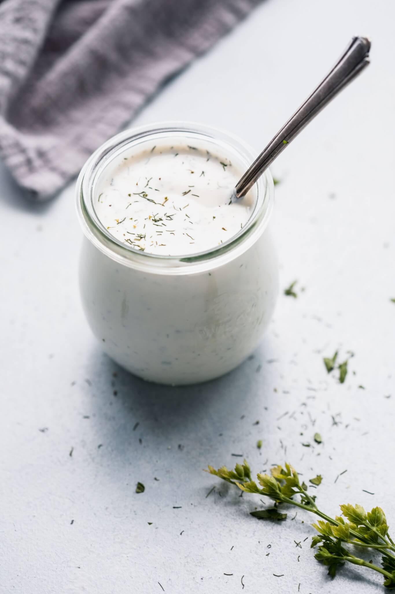

Ranch Dressing

Incredible, creamy ranch dressing
This homemade ranch dressing is out of this world, and we guarantee you'll never settle for the shop bought version ever again!
We think it's perfect served alongside grilled or roasted meats and veggies, or simply as a dip.
Ingredients
For this amazing ranch dressing, you will need:
- 1-2 cups mayonnaise
- 1 cup sour cream
- Fresh garlic - 1 glove, grated
- Fresh dill, 1 Tbsp, finely chopped
- The juice of 1 fresh lemon
- 1 tsp dried dill
- 1 tsp dried parsley
- 1 tsp onion powder
- 1 tsp garlic powder
- 1/2 tsp cayenne pepper
- Freshly ground black pepper
- 1 pinch monosodium glutamate
- Salt
Steps
- Combine the mayonnaise, sour cream and lemon juice in a bowl and whisk thoroughly. If the mixture is too thick, add some water or milk and whisk until it reaches your desired thickness.
- Add the dried herbs, along with the cayenne pepper and stir in.
- Add a pinch of the monosodium glutamate, and season with salt and pepper. Adjust to taste.
- Leave the mixture to sit for an hour at room-temperate for all the flavours to develop. Even better, leave it in the fridge overnight.